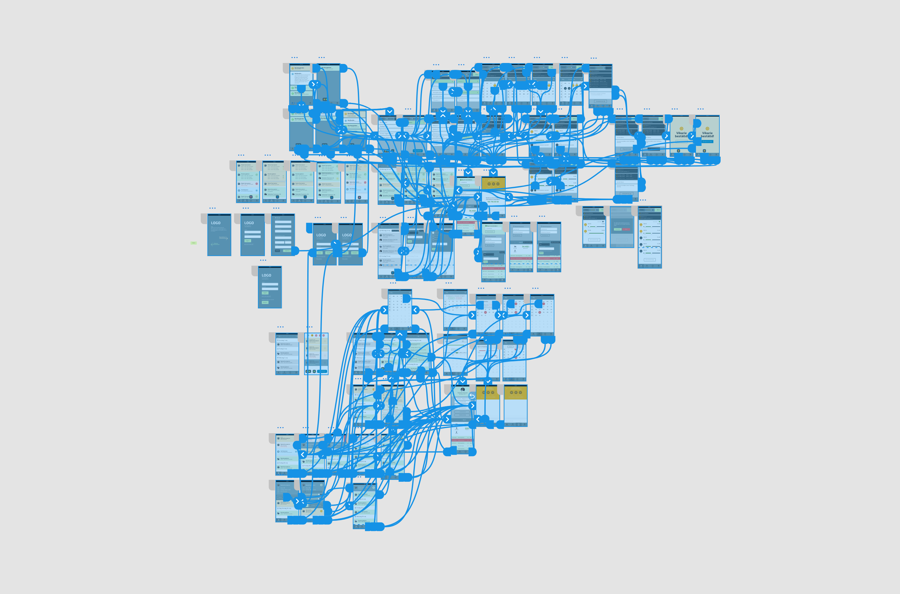

Earth People
UX Designer
In 2017 I worked as a UX Designer at Earth People with various projects. I made the design from UX to UI for Internetstiftelsens Digitala Lektioner. For Lärarförmedlarna I was part of remaking their existing app. For Orio I made the UX to the UI for their SaabApp, which will work a bit like Kry for cars. I have also made the search section for Sveriges kommunikatörer.
